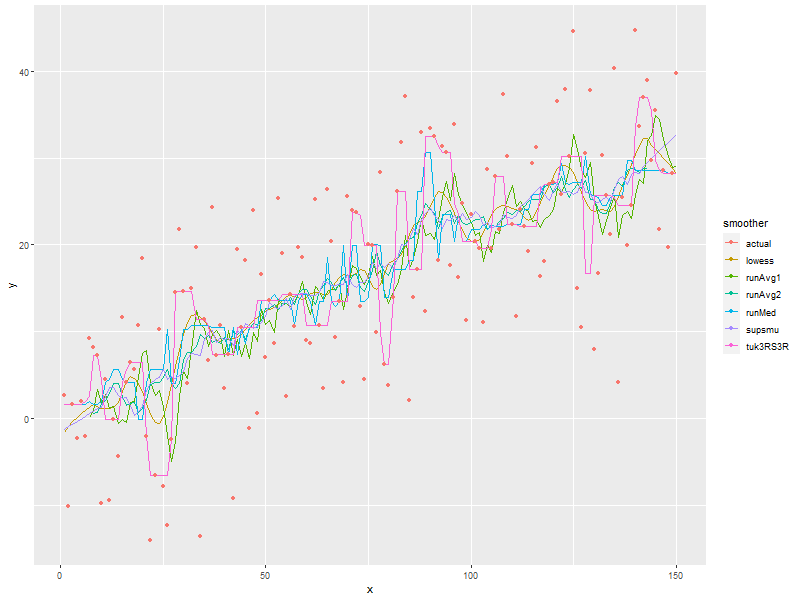
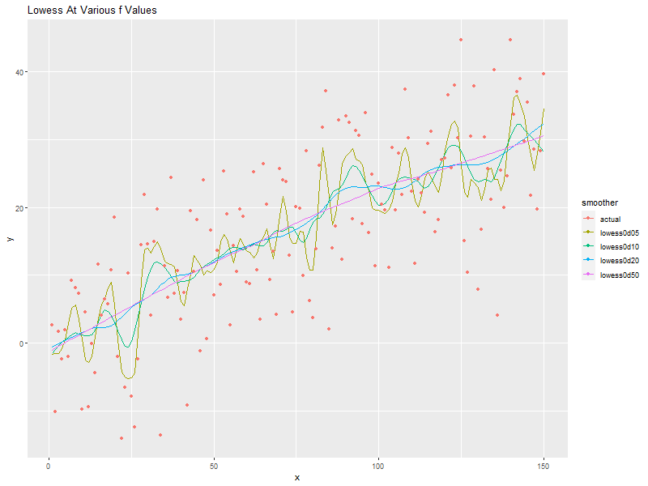

Data Smoothing
| Author: | Mitch Richling |
| Updated: | 2022-06-04 16:17:47 |
Copyright 2020-2021 Mitch Richling. All rights reserved.
Table of Contents
1. Metadata
The home for this HTML file is: https://richmit.github.io/ex-R/smoothing.html
Files related to this document may be found on github: https://github.com/richmit/ex-R
Directory contents:
src |
- | The org-mode file that generated this HTML document |
docs |
- | This html document |
data |
- | Data files |
tangled |
- | Tangled R code from this document |
2. Example Data
nPts <- 150 xDat <- 1:nPts yDat <- rnorm(nPts, mean=0, sd=10)+xDat*.2
3. Various Smoothers
3.1. Compute various smoothed data sets
Some methods produce objects with new X data while others just produce new Y data.
smDatRunMed <- runmed(yDat, 15) # Running Median smDatRunAvg2 <- stats::filter(yDat, # Two sided, running average rep(1/15,15), method='convolution', sides=2) smDatRunAvg1 <- stats::filter(yDat, # One sided, running average rep(1/7,7), method='convolution', sides=1) smDatTuk3RS3R <- smooth(yDat, kind = "3RS3R") # Tukey Smoother smDatLowess0d10 <- lowess(xDat, yDat, f=.1) # Cleveland lowess smoother smDatSupSmu <- supsmu(xDat, yDat, span=.1) # Friedman's SuperSmoother
3.2. Put it all in a data.frame for ggplot
allDat <- rbind(data.frame(smoother=rep('actual', nPts), x=xDat, y=yDat), data.frame(smoother=rep('runMed', nPts), x=xDat, y=smDatRunMed), data.frame(smoother=rep('runAvg2', nPts), x=xDat, y=smDatRunAvg2), data.frame(smoother=rep('runAvg1', nPts), x=xDat, y=smDatRunAvg1), data.frame(smoother=rep('tuk3RS3R', nPts), x=xDat, y=as.vector(smDatTuk3RS3R)), data.frame(smoother=rep('lowess', nPts), x=smDatLowess0d10$x, y=smDatLowess0d10$y), data.frame(smoother=rep('supsmu', nPts), x=smDatSupSmu$x, y=smDatSupSmu$y) )
3.3. Plot them all
ggplot(allDat, aes(x=x, y=y, col=smoother)) + geom_line(data=subset(allDat, smoother!='actual')) + geom_point(data=subset(allDat, smoother=='actual'))

4. Lowess f values
4.1. Compute three lowess smoothings with different f values
smDatLowess0d05 <- lowess(xDat, yDat, f=.05) smDatLowess0d20 <- lowess(xDat, yDat, f=.20) smDatLowess0d50 <- lowess(xDat, yDat, f=.50)
4.2. Put all of our lowess curves into a data.frame with the original data so we can plot it all with ggplot
allDat <- rbind(data.frame(smoother=rep('actual', nPts), x=xDat, y=yDat), data.frame(smoother=rep('lowess0d05', nPts), x=smDatLowess0d05$x, y=smDatLowess0d05$y), data.frame(smoother=rep('lowess0d10', nPts), x=smDatLowess0d10$x, y=smDatLowess0d10$y), data.frame(smoother=rep('lowess0d20', nPts), x=smDatLowess0d20$x, y=smDatLowess0d20$y), data.frame(smoother=rep('lowess0d50', nPts), x=smDatLowess0d50$x, y=smDatLowess0d50$y) )
4.3. Plot them all
ggplot(allDat, aes(x=x, y=y, col=smoother)) + geom_line(data=subset(allDat, smoother!='actual')) + geom_point(data=subset(allDat, smoother=='actual')) + labs(title='Lowess At Various f Values')
